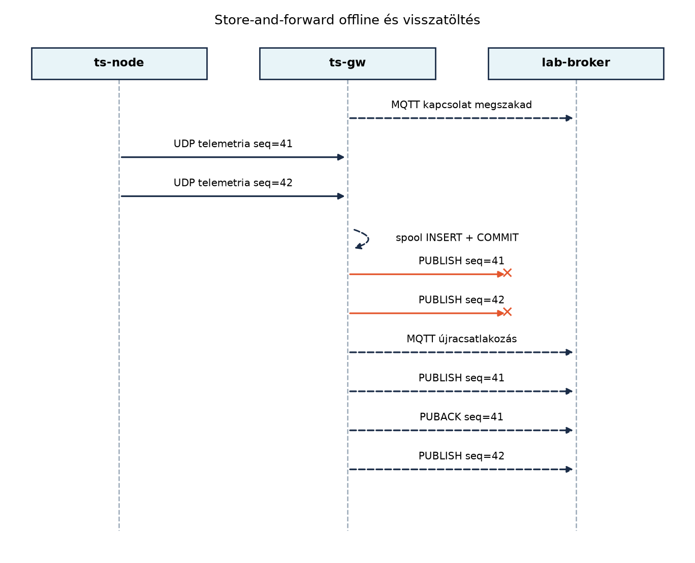

A hálózatkiesés az IoT-edge rétegben nem ritka esemény, hanem
tervezési feltétel. A TerraSense üvegházában a ts-node
szenzorok továbbra is mérik a hőmérsékletet, páratartalmat és
talajnedvességet, a ts-gw gateway viszont nem tudja az
MQTT-üzeneteket a brokerhez eljuttatni, mert a helyi hálózat vagy a
felhőkapcsolat megszakadt. Ha ilyenkor a gateway egyszerűen eldobná a
beérkező telemetriát, értékes adatok vesznének el, és a későbbi
elemzések, riasztások hiányosak lennének. A megoldás a
store-and-forward (tárolás és továbbítás): az offline
időszakban a gateway perzisztens puffert használ, majd a kapcsolat
helyreállása után sorrendhelyesen visszatölti az adatokat, miközben
jelzi az esetleges duplikációkat.
Definíció (store-and-forward). A store-and-forward olyan üzenetkezelési minta, amelyben a köztes csomópont (itt a gateway) az üzenetet először tartósan tárolja, majd a hálózati kapcsolat rendelkezésre állásakor továbbítja a cél felé. A tárolás akkor is megtörténik, ha a cél nem elérhető; így az adat nem vész el, legfeljebb késik.
Definíció (perzisztens puffer). A perzisztens puffer olyan, lemezen (vagy más nem felejtő közegen) tárolt várakozási sor, amely túléli a folyamat újraindulását is. A memóriapufferrel szemben nem törlődik áramszünet vagy processzkilépés esetén.
A ts-gw C++ szolgáltatás már rendelkezik az alapvető
protokollfordítással: a bejövő UDP/BLE üzeneteket MQTT publish-csomaggá
alakítja, és elküldi a brokerre. A store-and-forward réteg beillesztése
a következő logikával bővíti ezt:
(site, node_id, boot_id, seq) négyest.
Ez azonosítja az eszköz egy adott mérési csomagját. A
boot_id nélkül egy újraindult node seq=1
értéke összeütközne a korábbi boot azonos sorszámával; a site nélkül két
üvegház azonos node- és seq-értéke ütközne.UNIQUE(site, node_id, boot_id, seq) megkötéssel, hogy
ugyanaz a csomag ne kerülhessen be kétszer.seq állapotot. A fogadás és a spoolba írás így a
brokertől függetlenül működik; a broker elérhetetlensége nem blokkolja
az adatfelvételt.id szerinti sorrendben, és egyesével továbbítja
őket.PUBLISH (a PUBACK
megérkezése) után a rekord törlődik a pufferből. Ha a publish hibát ad,
a rekord a pufferben marad, a publisher lecsatlakozik, és a ciklus
backoffal újrapróbálkozik.A gateway három állapotot különböztet meg. A spooled azt jelenti, hogy a minta tartósan a helyi SQLite-pufferben van. A broker_acked azt jelenti, hogy a broker a QoS 1 PUBACK-kel nyugtázta a PUBLISH-t. A backend_committed azt jelenti, hogy a backend az eseményt idempotensen feldolgozta és tartósan eltárolta. A PUBACK tehát nem azonos a backend feldolgozásával; a gateway a spoolból a PUBACK után törölhet, de a backend oldali idempotencia ettől függetlenül kötelező. Ezt a különbséget a Kafka és a kézbesítési szemantika alfejezet is hangsúlyozza.

A puffer megvalósításához SQLite-ot használunk, WAL
(Write-Ahead Logging) módban. A WAL lehetővé teszi, hogy az olvasó
műveletek ne blokkolják az írót, és fordítva, ami akkor fontos, ha a
publisher szál folyamatosan olvassa a sort, miközben az UDP-fogadó szál
írja. A tranzakciók biztosítják, hogy a beszúrás, a korlát érvényesítése
és a törlés atomi legyen, és a folyamat váratlan leállása esetén sem
sérüljön a tábla. A synchronous=NORMAL beállítás WAL
mellett jó kompromisszum: a leállás után az adatbázis konzisztens, de
áramszünet esetén az utolsó néhány tranzakció elveszhet. Ha a puffer
minden egyes mintát áramszünet után is kötelezően meg akar őrizni,
synchronous=FULL szükséges, nagyobb írási
késleltetéssel.
Tábla (spool séma).
| Oszlop | Típus | Megkötés | Leírás |
|---|---|---|---|
id |
INTEGER | PRIMARY KEY AUTOINCREMENT | Visszatöltési sorrend |
site |
TEXT | NOT NULL | Telephely-azonosító |
node_id |
TEXT | NOT NULL | Eszközazonosító (pl. n001) |
boot_id |
INTEGER | NOT NULL | Eszköz boot-epoch azonosítója |
seq |
INTEGER | NOT NULL | Monoton sorszám az adott booton belül |
ts |
INTEGER | NOT NULL | Eredeti eseményidő, epoch ms UTC |
topic |
TEXT | NOT NULL | Cél MQTT topic |
payload |
TEXT | NOT NULL | Sorosított üzenet |
created_ms |
INTEGER | NOT NULL | A spoolba írás ideje (megfigyeléshez) |
UNIQUE(site, node_id,
boot_id, seq) |
Deduplikáció |
A payload mező a teljes JSON-szöveget tartalmazza; a
gateway a visszatöltéskor nem építi újra az üzenetet, hanem bitazonos
szöveget küld. Ha később CBOR-ra váltunk, a payload BLOB lehet. A
created_ms nem az esemény ideje, hanem a gateway fogadási
ideje; a kettőt a diagnosztikában külön kell kezelni.
Memóriapuffer vs. lemezes puffer. A memóriapuffer
gyors, de nem vészeli át a folyamat újraindulását. Mivel a gateway
kritikus adatútközvetítő, a lemezes puffer az alapértelmezés. A
memóriapuffert legfeljebb a lemez előtti gyors átmeneti sorként érdemes
használni; a ts-gw szolgáltatás C++-ban:
protokollfordítás MQTT-re korlátos EventQueue-ja ilyen
átmeneti szerepet tölt be, de tartós tárolásra nem alkalmas.
SQLite vs. append-only fájl. Az append-only napló egyszerűbb, de a törlés utáni üresedés, a töredezettség és a konzisztens tranzakciók kezelése kézi munkát igényel. Az SQLite beépített tranzakciókat, lekérdezéseket és WAL-t ad, és C++-hoz is egyszerűen linkelhető. A hátrány az SQLite-függőség és a nagyobb bináris méret; a gatewayen ez elfogadható.
Korlát és eldobási stratégia. A lemez véges. Meg kell határozni a puffer maximális méretét (például rekordszámban vagy bájtban). Ha a puffer megtelik, két gyakori stratégia van:
A TerraSense-ben a drop-oldest a választott
stratégia, mert a riasztásoknak és a valós idejű megfigyelésnek jobban
kedvez a friss adat, a történeti elemzés pedig ritkán igényel teljes
offline időszakot másodperc pontossággal. A korlát rekordszám-alapú; a
bájtalapú korlát a Feladatok egyik
kiterjesztése. A korlát érvényesítése ugyanabban a tranzakcióban
történik, mint a beszúrás, különben két párhuzamos beszúrás túlléphetné
a limitet. A legrégebbi rekordokat az id sorrendje jelöli
ki, így az eldobás determinisztikus.
| Szempont | SQLite WAL | Append-only fájl | Memóriapuffer |
|---|---|---|---|
| Túlélés újrainduláskor | igen | igen | nem |
| Tranzakciós biztonság | igen | kézzel | nem értelmezett |
| Olvasás írás közben | jól támogatott | nehézkes | triviális |
| Lekérdezés és korlát | SQL, kötött paraméterrel | saját kód | saját kód |
| Bonyolultság | közepes | kisebb kezdetben | kicsi |
A szülőkönyvtár és a jogosultságok. A spool fájlja
nem írható olyan könyvtárba, amely nem létezik, vagy amelybe a
szolgáltatás felhasználója nem írhat. A laborban a projekt alatti
./var/spool.db az alapértelmezés, és a gateway induláskor
létrehozza a ./var könyvtárat. Éles rendszerben a spool
/var/lib/ts-gw/spool.db; ezt a systemd-telepítés
install -d -o tsgw -g tsgw -m 0750 /var/lib/ts-gw
paranccsal hozza létre. A gateway nem ír a /etc alá, és nem
fut rootként.
A visszatöltés kötegelése. A pending()
nem tölti be a teljes spoolt, hanem legfeljebb 50 rekordot ad vissza.
Hosszú offline időszak után így a memóriahasználat és a brokerre zúduló
első hullám is korlátozott. A rekordok között 100 ms szünet van; ez
lassítja a visszatöltést, de védi a brokert és a backendet.
Tegyük fel, hogy a broker 10:00:00-kor leáll. A ts-node
továbbra is küldi a telemetriát 10 másodpercenként. A gateway a 10:00:10
és 10:00:30 között érkező üzeneteket a pufferbe írja. 10:01:00-kor a
broker újra elérhető, a publisher ciklus pedig megkezdi a
visszatöltést.
| Idő (UTC) | Esemény | Puffer tartalom (id, site, node, boot, seq) |
|---|---|---|
| 10:00:00 | broker leáll | üres |
| 10:00:10 | UDP telemetria gh1/n001, boot=7, seq=41 |
(1, gh1, n001, 7, 41) |
| 10:00:20 | UDP telemetria gh1/n001, boot=7, seq=42 |
(1..2, gh1, n001, 7, 41..42) |
| 10:00:30 | UDP telemetria gh1/n001, boot=7, seq=43 |
(1..3, gh1, n001, 7, 41..43) |
| 10:01:00 | broker újra elindul | (1..3, gh1, n001, 7, 41..43) |
| 10:01:00.2 | PUBLISH seq=41 sikeres, törlés | (2, 42), (3, 43) |
| 10:01:00.4 | PUBLISH seq=42 sikeres, törlés | (3, 43) |
| 10:01:00.6 | PUBLISH seq=43 sikeres, törlés | üres |
A visszatöltés sorrendjét az id oszlop garantálja, így a
backend az eseményidőtől függetlenül a gateway általi fogadási
sorrendben kapja az üzeneteket. Az seq mező a backend felé
megőrzi az eszköz szerinti sorrendet, az ts a mért időt, a
created_ms pedig a gateway oldali fogadási időt.
Munkakönyvtár és a projekt másolása. A ts-gw szolgáltatás C++-ban: protokollfordítás
MQTT-re projektje a ~/iot-labor/i036/ts-gw könyvtárban
van. A másolás célja a ~/iot-labor/i037/ts-gw, ezért a
forrás útvonala abszolút:
mkdir -p ~/iot-labor/i037
cp -r ~/iot-labor/i036/ts-gw ~/iot-labor/i037/ts-gw
cd ~/iot-labor/i037/ts-gw
mkdir -p varA másolás után a Config, Normalizer,
Json, EventQueue,
UdpInputAdapter, MqttPublisher és a többi A ts-gw szolgáltatás C++-ban: protokollfordítás
MQTT-re-os fájl változatlanul a helyén van. Az alábbiakban csak a
megváltozott vagy új fájlokat adjuk meg teljes terjedelemben: a
store_forward.hpp, a store_forward.cpp, a
main.cpp, a CMakeLists.txt és a konfiguráció.
Ez a projekt így önállóan buildelhető; nem marad hiányzó
.cpp vagy be nem fejezett osztály.
A konfiguráció a laborban a projekt alatti spoolt használja, hogy ne kelljen root jogosultság:
# config/ts-gw.toml
broker_uri = "tcp://localhost:1883"
client_id = "ts-gw"
udp_bind = "0.0.0.0"
udp_port = 4000
queue_capacity = 1024
qos = 1
log_level = "info"
spool_path = "./var/spool.db"
max_spool_records = 100000A StoreForwardDb fejlécfájlja tartalmazza az
<sqlite3.h> fejlécet, így a sqlite3*
típus nem függ attól, hogy a felhasználó előbb más fejlécet
includeolt-e. A SpoolRecord a teljes deduplikációs kulcsot
és a payloadot is tartalmazza. A pending() legfeljebb
limit rekordot ad vissza; nincs olyan metódus, amely a
teljes spoolt egyetlen vektorba töltené.
#pragma once
#include <cstddef>
#include <cstdint>
#include <mutex>
#include <string>
#include <vector>
#include <sqlite3.h>
namespace terrasense {
struct SpoolRecord {
int64_t id{0};
std::string site;
std::string node_id;
uint32_t boot_id{0};
uint32_t seq{0};
int64_t ts{0};
std::string topic;
std::string payload;
};
// SQLite-alapu tartos spool. Egy kapcsolatot hasznal, a metodusokat mutex
// sorosítja; a WAL mod a folyamat leallasa után is konzisztens allapotot ad.
class StoreForwardDb {
public:
StoreForwardDb(const std::string& path, std::size_t max_records);
~StoreForwardDb();
StoreForwardDb(const StoreForwardDb&) = delete;
StoreForwardDb& operator=(const StoreForwardDb&) = delete;
void initialize();
// A beszuras deduplikalt a (site, node_id, boot_id, seq) kulcson. Az
// inserted akkor igaz, ha uj rekord kerult a spoolba.
void enqueue(const std::string& site, const std::string& node_id,
uint32_t boot_id, uint32_t seq, int64_t ts,
const std::string& topic, const std::string& payload,
bool& inserted);
// Legfeljebb limit rekordot ad vissza id szerinti sorrendben.
std::vector<SpoolRecord> pending(std::size_t limit);
bool remove(int64_t id);
std::size_t count();
uint64_t dropped_total() const;
private:
void enforce_limit_locked();
void exec_locked(const char* sql);
[[noreturn]] void fail_locked(const std::string& context) const;
sqlite3* db_{nullptr};
std::string path_;
std::size_t max_records_;
mutable std::mutex mutex_;
uint64_t dropped_total_{0};
};
} // namespace terrasenseA megvalósítás a beszúrást és a korlát érvényesítését egyetlen
BEGIN IMMEDIATE tranzakcióba fogja. A korlát lekérdezése és
a törlés kötött paraméterrel fut, nem string-összefűzéssel; a
sqlite3_changes() adja a ténylegesen törölt rekordok
számát, amelyet a spool_stats tábla tartósan számlál. A
fail_locked() minden SQLite-hibát kontextussal és az
adatbázis útvonalával dob tovább, így a naplóban nem marad néma „prepare
failed”.
#include "store_forward.hpp"
#include <chrono>
#include <memory>
#include <stdexcept>
#include <string>
namespace terrasense {
namespace {
using StmtPtr = std::unique_ptr<sqlite3_stmt, decltype(&sqlite3_finalize)>;
StmtPtr prepare(sqlite3* db, const char* sql) {
sqlite3_stmt* stmt = nullptr;
if (sqlite3_prepare_v2(db, sql, -1, &stmt, nullptr) != SQLITE_OK) {
const std::string message = sqlite3_errmsg(db);
sqlite3_finalize(stmt);
throw std::runtime_error("sqlite prepare: " + message);
}
return StmtPtr(stmt, &sqlite3_finalize);
}
int64_t now_ms() {
using namespace std::chrono;
return duration_cast<milliseconds>(system_clock::now().time_since_epoch())
.count();
}
} // namespace
StoreForwardDb::StoreForwardDb(const std::string& path,
std::size_t max_records)
: path_(path), max_records_(max_records) {
if (max_records_ == 0) {
throw std::runtime_error("max_records must be positive");
}
sqlite3* db = nullptr;
const int rc = sqlite3_open_v2(
path_.c_str(), &db,
SQLITE_OPEN_READWRITE | SQLITE_OPEN_CREATE | SQLITE_OPEN_FULLMUTEX,
nullptr);
if (rc != SQLITE_OK) {
const std::string message = db != nullptr ? sqlite3_errmsg(db)
: "cannot allocate sqlite handle";
if (db != nullptr) {
sqlite3_close_v2(db);
}
throw std::runtime_error("sqlite open " + path_ + ": " + message);
}
db_ = db;
sqlite3_busy_timeout(db_, 5000);
}
StoreForwardDb::~StoreForwardDb() {
if (db_ != nullptr) {
sqlite3_close_v2(db_);
}
}
void StoreForwardDb::fail_locked(const std::string& context) const {
const char* message = db_ != nullptr ? sqlite3_errmsg(db_) : "null database";
throw std::runtime_error(context + " (" + path_ + "): " + message);
}
void StoreForwardDb::exec_locked(const char* sql) {
char* message = nullptr;
if (sqlite3_exec(db_, sql, nullptr, nullptr, &message) != SQLITE_OK) {
const std::string text = message != nullptr ? message : "unknown error";
sqlite3_free(message);
throw std::runtime_error("sqlite exec (" + path_ + "): " + text);
}
}
void StoreForwardDb::initialize() {
std::lock_guard<std::mutex> lock(mutex_);
exec_locked("PRAGMA journal_mode=WAL;");
exec_locked("PRAGMA synchronous=NORMAL;");
exec_locked(
"CREATE TABLE IF NOT EXISTS spool ("
" id INTEGER PRIMARY KEY AUTOINCREMENT,"
" site TEXT NOT NULL,"
" node_id TEXT NOT NULL,"
" boot_id INTEGER NOT NULL,"
" seq INTEGER NOT NULL,"
" ts INTEGER NOT NULL,"
" topic TEXT NOT NULL,"
" payload TEXT NOT NULL,"
" created_ms INTEGER NOT NULL,"
" UNIQUE(site, node_id, boot_id, seq)"
");"
"CREATE INDEX IF NOT EXISTS idx_spool_id ON spool(id);"
"CREATE TABLE IF NOT EXISTS spool_stats ("
" key TEXT PRIMARY KEY, value INTEGER NOT NULL"
");"
"INSERT INTO spool_stats(key, value) VALUES('dropped_total', 0)"
" ON CONFLICT(key) DO NOTHING;");
auto statement = prepare(
db_, "SELECT value FROM spool_stats WHERE key='dropped_total';");
const int rc = sqlite3_step(statement.get());
if (rc == SQLITE_ROW) {
dropped_total_ = static_cast<uint64_t>(sqlite3_column_int64(
statement.get(), 0));
} else if (rc != SQLITE_DONE) {
fail_locked("read dropped_total");
}
}
void StoreForwardDb::enqueue(const std::string& site,
const std::string& node_id, uint32_t boot_id,
uint32_t seq, int64_t ts,
const std::string& topic,
const std::string& payload, bool& inserted) {
std::lock_guard<std::mutex> lock(mutex_);
inserted = false;
exec_locked("BEGIN IMMEDIATE;");
try {
auto statement = prepare(
db_,
"INSERT INTO spool"
" (site, node_id, boot_id, seq, ts, topic, payload, created_ms)"
" VALUES (?, ?, ?, ?, ?, ?, ?, ?)"
" ON CONFLICT(site, node_id, boot_id, seq) DO NOTHING;");
sqlite3_stmt* stmt = statement.get();
if (sqlite3_bind_text(stmt, 1, site.c_str(), -1, SQLITE_TRANSIENT) !=
SQLITE_OK ||
sqlite3_bind_text(stmt, 2, node_id.c_str(), -1, SQLITE_TRANSIENT) !=
SQLITE_OK ||
sqlite3_bind_int64(stmt, 3, static_cast<sqlite3_int64>(boot_id)) !=
SQLITE_OK ||
sqlite3_bind_int64(stmt, 4, static_cast<sqlite3_int64>(seq)) !=
SQLITE_OK ||
sqlite3_bind_int64(stmt, 5, static_cast<sqlite3_int64>(ts)) !=
SQLITE_OK ||
sqlite3_bind_text(stmt, 6, topic.c_str(), -1, SQLITE_TRANSIENT) !=
SQLITE_OK ||
sqlite3_bind_text(stmt, 7, payload.c_str(), -1, SQLITE_TRANSIENT) !=
SQLITE_OK ||
sqlite3_bind_int64(stmt, 8, now_ms()) != SQLITE_OK) {
fail_locked("bind enqueue");
}
if (sqlite3_step(stmt) != SQLITE_DONE) {
fail_locked("insert spool record");
}
inserted = sqlite3_changes(db_) > 0;
enforce_limit_locked();
exec_locked("COMMIT;");
} catch (...) {
sqlite3_exec(db_, "ROLLBACK;", nullptr, nullptr, nullptr);
throw;
}
}
void StoreForwardDb::enforce_limit_locked() {
auto count_statement = prepare(db_, "SELECT COUNT(*) FROM spool;");
if (sqlite3_step(count_statement.get()) != SQLITE_ROW) {
fail_locked("count spool");
}
const auto total = static_cast<uint64_t>(
sqlite3_column_int64(count_statement.get(), 0));
if (total <= static_cast<uint64_t>(max_records_)) {
return;
}
const uint64_t to_drop =
total - static_cast<uint64_t>(max_records_);
auto delete_statement = prepare(
db_,
"DELETE FROM spool WHERE id IN"
" (SELECT id FROM spool ORDER BY id ASC LIMIT ?);");
if (sqlite3_bind_int64(delete_statement.get(), 1,
static_cast<sqlite3_int64>(to_drop)) != SQLITE_OK) {
fail_locked("bind spool limit");
}
if (sqlite3_step(delete_statement.get()) != SQLITE_DONE) {
fail_locked("enforce spool limit");
}
const auto dropped = static_cast<uint64_t>(sqlite3_changes(db_));
if (dropped == 0) {
return;
}
dropped_total_ += dropped;
auto update_statement = prepare(
db_,
"UPDATE spool_stats SET value = value + ?"
" WHERE key='dropped_total';");
if (sqlite3_bind_int64(update_statement.get(), 1,
static_cast<sqlite3_int64>(dropped)) != SQLITE_OK) {
fail_locked("bind dropped_total");
}
if (sqlite3_step(update_statement.get()) != SQLITE_DONE) {
fail_locked("update dropped_total");
}
}
std::vector<SpoolRecord> StoreForwardDb::pending(std::size_t limit) {
std::lock_guard<std::mutex> lock(mutex_);
std::vector<SpoolRecord> result;
if (limit == 0) {
return result;
}
auto statement = prepare(
db_,
"SELECT id, site, node_id, boot_id, seq, ts, topic, payload"
" FROM spool ORDER BY id ASC LIMIT ?;");
if (sqlite3_bind_int64(statement.get(), 1,
static_cast<sqlite3_int64>(limit)) != SQLITE_OK) {
fail_locked("bind pending limit");
}
int rc = SQLITE_ROW;
while ((rc = sqlite3_step(statement.get())) == SQLITE_ROW) {
SpoolRecord record;
record.id = sqlite3_column_int64(statement.get(), 0);
const auto* site = sqlite3_column_text(statement.get(), 1);
const auto* node = sqlite3_column_text(statement.get(), 2);
record.site = site != nullptr
? reinterpret_cast<const char*>(site)
: "";
record.node_id = node != nullptr
? reinterpret_cast<const char*>(node)
: "";
record.boot_id = static_cast<uint32_t>(
sqlite3_column_int64(statement.get(), 3));
record.seq = static_cast<uint32_t>(
sqlite3_column_int64(statement.get(), 4));
record.ts = sqlite3_column_int64(statement.get(), 5);
const auto* topic = sqlite3_column_text(statement.get(), 6);
const auto* payload = sqlite3_column_text(statement.get(), 7);
record.topic = topic != nullptr
? reinterpret_cast<const char*>(topic)
: "";
record.payload = payload != nullptr
? reinterpret_cast<const char*>(payload)
: "";
result.push_back(std::move(record));
}
if (rc != SQLITE_DONE) {
fail_locked("read pending records");
}
return result;
}
bool StoreForwardDb::remove(int64_t id) {
std::lock_guard<std::mutex> lock(mutex_);
auto statement = prepare(db_, "DELETE FROM spool WHERE id=?;");
if (sqlite3_bind_int64(statement.get(), 1,
static_cast<sqlite3_int64>(id)) != SQLITE_OK) {
fail_locked("bind remove id");
}
if (sqlite3_step(statement.get()) != SQLITE_DONE) {
fail_locked("remove spool record");
}
return sqlite3_changes(db_) > 0;
}
std::size_t StoreForwardDb::count() {
std::lock_guard<std::mutex> lock(mutex_);
auto statement = prepare(db_, "SELECT COUNT(*) FROM spool;");
if (sqlite3_step(statement.get()) != SQLITE_ROW) {
fail_locked("count spool records");
}
return static_cast<std::size_t>(
sqlite3_column_int64(statement.get(), 0));
}
uint64_t StoreForwardDb::dropped_total() const {
std::lock_guard<std::mutex> lock(mutex_);
return dropped_total_;
}
} // namespace terrasenseA main.cpp a bemeneti oldalt és a publisher oldalt egy
folyamatban, de egymástól függetlenül működteti. Az UDP-visszahívás
normalizál, JSON-t készít, majd a spoolba ír; a spoolba írás sikere után
commitálja a seq-et. A publisher ciklus csak a spoolból
olvas, ezért a broker kiesése nem akadályozza az adatfelvételt. A
pending(50) kötegelt olvasás, a remove() csak
sikeres PUBACK után fut. A main a spool szülőkönyvtárát
létrehozza, és a spool útvonalát a konfigurációból veszi, nem
hardcode-olja a /var/lib/ts-gw címet.
#include "Config.h"
#include "Json.h"
#include "MqttPublisher.h"
#include "Normalizer.h"
#include "TelemetryTypes.h"
#include "UdpInputAdapter.h"
#include "store_forward.hpp"
#include <algorithm>
#include <atomic>
#include <chrono>
#include <csignal>
#include <cstdint>
#include <exception>
#include <filesystem>
#include <iostream>
#include <string>
#include <thread>
using namespace terrasense;
namespace {
std::atomic<bool> g_running{true};
std::atomic<std::uint64_t> g_main_loop_ticks{0};
void handle_signal(int) { g_running.store(false); }
int64_t now_ms() {
using namespace std::chrono;
return duration_cast<milliseconds>(system_clock::now().time_since_epoch())
.count();
}
} // namespace
int main(int argc, char** argv) {
Config config;
bool help = false;
std::string err;
if (!load_config(argc, argv, config, help, err)) {
std::cerr << "[ERROR] configuration: " << err << "\n";
return 2;
}
if (help) {
print_usage(argv[0]);
return 0;
}
std::signal(SIGINT, handle_signal);
std::signal(SIGTERM, handle_signal);
try {
const std::filesystem::path spool_path(config.spool_path);
const std::filesystem::path parent = spool_path.parent_path();
if (!parent.empty()) {
std::error_code ec;
std::filesystem::create_directories(parent, ec);
if (ec) {
throw std::runtime_error("cannot create spool directory " +
parent.string() + ": " + ec.message());
}
}
StoreForwardDb spool(config.spool_path, config.max_spool_records);
spool.initialize();
std::cout << "[INFO] spool " << config.spool_path
<< " max_records=" << config.max_spool_records
<< " current=" << spool.count() << "\n";
Normalizer normalizer;
MqttPublisher publisher(config.broker_uri, config.client_id);
UdpInputAdapter udp(config.udp_bind, config.udp_port);
std::cout << "[INFO] config broker=" << config.broker_uri
<< " udp=" << config.udp_bind << ":" << config.udp_port
<< " qos=" << config.qos << "\n";
if (publisher.connect(err)) {
std::cout << "[INFO] MQTT connected\n";
} else {
std::cout << "[WARN] MQTT unavailable: " << err
<< "; input continues into the durable spool\n";
}
std::uint64_t last_dropped = spool.dropped_total();
if (!udp.start(
[&](std::string raw) {
TelemetrySample sample;
std::string parse_error;
if (!normalizer.parse(raw, sample, parse_error)) {
std::cout << "[WARN] rejected frame: " << parse_error << "\n";
return;
}
std::string duplicate_error;
if (normalizer.is_duplicate(sample, duplicate_error)) {
std::cout << "[WARN] duplicate " << sample.site << "/"
<< sample.node_id << " boot=" << sample.boot_id
<< " seq=" << sample.seq << ": "
<< duplicate_error << "\n";
return;
}
std::string payload;
std::string json_error;
if (!to_json(sample, payload, json_error)) {
std::cout << "[WARN] serialization failed: " << json_error
<< "\n";
return;
}
const std::string topic = "terrasense/" + sample.site + "/" +
sample.node_id + "/telemetry";
bool inserted = false;
try {
spool.enqueue(sample.site, sample.node_id, sample.boot_id,
sample.seq, sample.ts_epoch_ms, topic, payload,
inserted);
} catch (const std::exception& e) {
std::cout << "[ERROR] spool enqueue failed: " << e.what()
<< "\n";
return;
}
// A tartos spoolba kerules a dedup elfogadasi pontja: innen a
// seq commitálhato, fuggetlenul a broker elerhetosegetol.
normalizer.commit_seq(sample);
if (inserted) {
std::cout << "[INFO] spooled " << topic
<< " seq=" << sample.seq << "\n";
} else {
std::cout << "[INFO] duplicate already in spool " << topic
<< " seq=" << sample.seq << "\n";
}
const std::uint64_t dropped = spool.dropped_total();
if (dropped != last_dropped) {
std::cout << "[WARN] spool limit reached; dropped="
<< dropped << "\n";
last_dropped = dropped;
}
},
err)) {
std::cerr << "[ERROR] UDP adapter: " << err << "\n";
return 1;
}
std::cout << "[INFO] UDP listening on " << config.udp_bind << ":"
<< config.udp_port << "\n";
int backoff_ms = 1000;
int64_t next_reconnect_ms = 0;
constexpr std::size_t kBatchSize = 50;
while (g_running.load()) {
g_main_loop_ticks.fetch_add(1);
const int64_t now = now_ms();
if (!publisher.is_connected() && now >= next_reconnect_ms) {
if (publisher.connect(err)) {
std::cout << "[INFO] MQTT connected\n";
backoff_ms = 1000;
next_reconnect_ms = 0;
} else {
std::cout << "[WARN] MQTT reconnect failed: " << err << "\n";
next_reconnect_ms = now + backoff_ms;
backoff_ms = std::min(backoff_ms * 2, 8000);
}
}
if (!publisher.is_connected()) {
std::this_thread::sleep_for(std::chrono::milliseconds(200));
continue;
}
auto records = spool.pending(kBatchSize);
if (records.empty()) {
std::this_thread::sleep_for(std::chrono::milliseconds(200));
continue;
}
bool publish_failed = false;
for (const auto& record : records) {
if (!g_running.load()) {
break;
}
if (!publisher.publish(record.topic, record.payload, config.qos, err)) {
std::cout << "[WARN] publish failed for spool id=" << record.id
<< ": " << err << "; record stays in spool\n";
publisher.disconnect();
next_reconnect_ms = 0;
publish_failed = true;
break;
}
if (!spool.remove(record.id)) {
std::cout << "[WARN] spool id=" << record.id
<< " disappeared before removal\n";
}
std::cout << "[INFO] forwarded spool id=" << record.id << " "
<< record.topic << " boot=" << record.boot_id
<< " seq=" << record.seq << "\n";
std::this_thread::sleep_for(std::chrono::milliseconds(100));
}
if (publish_failed) {
continue;
}
}
udp.stop();
std::cout << "[INFO] gateway stopped; spool=" << spool.count()
<< " dropped=" << spool.dropped_total() << "\n";
} catch (const std::exception& e) {
std::cerr << "[ERROR] fatal: " << e.what() << "\n";
return 1;
}
return 0;
}A CMake a Paho C++ mellett az SQLite-ot is pkg-configgal keresi, és
mindkettőt IMPORTED_TARGET-ként linkeli. A
store_forward.cpp bekerül az executable forrásai közé; a
paho-mqttpp3 target nem keveredik a Paho C
paho-mqtt3c könyvtárral.
cmake_minimum_required(VERSION 3.28)
project(ts-gw CXX)
set(CMAKE_CXX_STANDARD 17)
set(CMAKE_CXX_STANDARD_REQUIRED ON)
set(CMAKE_CXX_EXTENSIONS OFF)
find_package(PkgConfig REQUIRED)
pkg_check_modules(PAHO_MQTTPP3 REQUIRED IMPORTED_TARGET paho-mqttpp3)
pkg_check_modules(SQLITE3 REQUIRED IMPORTED_TARGET sqlite3)
find_package(Threads REQUIRED)
add_executable(ts-gw
src/main.cpp
src/Config.cpp
src/Normalizer.cpp
src/UdpInputAdapter.cpp
src/MqttPublisher.cpp
src/store_forward.cpp)
target_include_directories(ts-gw PRIVATE src)
target_link_libraries(ts-gw PRIVATE
PkgConfig::PAHO_MQTTPP3
PkgConfig::SQLITE3
Threads::Threads)
target_compile_options(ts-gw PRIVATE -Wall -Wextra -Wpedantic)A build és az első, online futtatás:
cd ~/iot-labor/i037/ts-gw
cmake -S . -B build -DCMAKE_BUILD_TYPE=Release
cmake --build build -j"$(nproc)"
docker compose -f ~/iot-labor/stack/compose.yaml up -d lab-broker
./build/ts-gw --config config/ts-gw.tomlEgy másik terminálban figyeld a topicokat, majd küldj öt mintát. A
küldő a ts-gw szolgáltatás C++-ban:
protokollfordítás MQTT-re projekt abszolút útvonalán van, nem a régi
i017/udp_sender.py példány:
docker exec -it lab-broker mosquitto_sub -t 'terrasense/#' -v
python3 ~/iot-labor/i036/ts-gw/scripts/send_udp.py --count 5 --seq 41 --interval 0.2A gateway illusztratív kimenete:
[INFO] spool ./var/spool.db max_records=100000 current=0
[INFO] config broker=tcp://localhost:1883 udp=0.0.0.0:4000 qos=1
[INFO] MQTT connected
[INFO] UDP listening on 0.0.0.0:4000
[INFO] spooled terrasense/gh1/n001/telemetry seq=41
[INFO] forwarded spool id=1 terrasense/gh1/n001/telemetry boot=7 seq=41
[INFO] spooled terrasense/gh1/n001/telemetry seq=42
[INFO] forwarded spool id=2 terrasense/gh1/n001/telemetry boot=7 seq=42Az offline szakasz ellenőrzése:
docker compose -f ~/iot-labor/stack/compose.yaml stop lab-broker
python3 ~/iot-labor/i036/ts-gw/scripts/send_udp.py --count 3 --seq 46 --interval 0.2
sqlite3 ~/iot-labor/i037/ts-gw/var/spool.db 'SELECT id, site, node_id, boot_id, seq, ts FROM spool ORDER BY id;'A várt, illusztratív kimenet (a ts értéke futásonként
változik):
1|gh1|n001|7|46|1793462683777
2|gh1|n001|7|47|1793462683977
3|gh1|n001|7|48|1793462684177Ezután indítsd újra a brokert, és figyeld a visszatöltést:
docker compose -f ~/iot-labor/stack/compose.yaml start lab-brokerA publisher néhány másodpercen belül feldolgozza a három rekordot, a
spool tábla kiürül, a mosquitto_sub pedig
sorrendben mutatja a seq=46, 47,
48 üzeneteket. Újabb lekérdezéssel ellenőrizhető, hogy a
tábla üres:
sqlite3 ~/iot-labor/i037/ts-gw/var/spool.db 'SELECT COUNT(*) FROM spool;'A korlát és az eldobás ellenőrzése. Indíts külön spoolt 3 rekordos korláttal, állítsd le a brokert, majd küldj öt mintát:
docker compose -f ~/iot-labor/stack/compose.yaml stop lab-broker
./build/ts-gw --config config/ts-gw.toml --spool-path ./var/spool-limit.db --max-spool-records 3
python3 ~/iot-labor/i036/ts-gw/scripts/send_udp.py --count 5 --seq 41 --interval 0.1
sqlite3 ~/iot-labor/i037/ts-gw/var/spool-limit.db 'SELECT id, seq FROM spool ORDER BY id; SELECT value FROM spool_stats WHERE key="dropped_total";'A várt, illusztratív eredmény: a legrégebbi két rekord kiesik, a
táblában a seq=43, 44, 45 marad,
a dropped_total értéke 2. Az id értékek nem
feltétlenül 3, 4, 5, mert az AUTOINCREMENT a törölt sorok
után is növeli a számlálót; a sorrend és a seq a lényeg. A
korlát érvényesítése ugyanabban a tranzakcióban fut, ezért nem fordulhat
elő, hogy a beszúrás commitálódik, de a törlés nem.
A deduplikációs kulcs ellenőrzése. Ugyanazzal a
spool-lal, offline állapotban küldj egy ismételt
boot=7, seq=43 mintát, majd egy új bootot jelképező
boot=8, seq=1 mintát:
python3 ~/iot-labor/i036/ts-gw/scripts/send_udp.py --boot 7 --seq 43
python3 ~/iot-labor/i036/ts-gw/scripts/send_udp.py --boot 8 --seq 1
sqlite3 ~/iot-labor/i037/ts-gw/var/spool-limit.db 'SELECT boot_id, seq, COUNT(*) FROM spool GROUP BY boot_id, seq ORDER BY boot_id, seq;'A boot=7, seq=43 rekordból egy marad, a
boot=8, seq=1 viszont új rekord, mert a node újraindulása
új boot-epochot indít. Ez a viselkedés akkor is helyes, ha a node
ugyanazon a site-on újraindul. A backend idempotenciája a
(site, node_id, boot_id, seq) kulcsot kapja; a gateway
helyi spoolja csak az első védelmi vonal.
| Tünet | Lehetséges ok | Javítás |
|---|---|---|
| A puffer nem ürül, a broker elérhető | a publisher nem fut, vagy a publish eredményét nem ellenőrzi | nézd meg a [INFO] forwarded spool sorokat; ellenőrizd a
publisher.is_connected() és a publish visszatérési
értékét |
| A visszatöltött üzenetek sorrendje nem megfelelő | a pending() nem ORDER BY id |
a lekérdezésben ORDER BY id ASC szerepeljen; a kötegelt
olvasás is ezt tartja |
| Duplikált sorok a pufferben | hiányzik a négyrészes UNIQUE kulcs |
UNIQUE(site, node_id, boot_id, seq); a régi adatbázist
új sémával kell létrehozni |
| „database is locked” induláskor | másik folyamat írja a fájlt, vagy nincs WAL | ellenőrizd, hogy egy gateway fut; a WAL bekapcsolása az
initialize()-ban történik |
| „unable to open database file” | a szülőkönyvtár nem létezik vagy nem írható | a main létrehozza a szülőkönyvtárat; élesben a systemd
install -d parancsa ad jogosultságot |
| A spool mérete nem csökken a limitnél | a enforce_limit_locked() nem fut le, vagy nincs kötve a
paraméter |
a beszúrás és a limit egy tranzakcióban van; ellenőrizd a
dropped_total növekedését |
| A gateway a broker leállásakor sem vesz fel adatot | a régi main a publish sikerétől tette függővé a
feldolgozást |
a spoolba írás a broker állapotától független; a publish külön ciklus |
A naplóban a [INFO] spooled a tartós elfogadást, a
[INFO] forwarded a broker felé történő továbbítást, a
[WARN] spool limit reached pedig az eldobást jelzi. A
spool_stats tábla dropped_total értéke
újraindulás után is megmarad, így a metrika nem tűnik el a folyamat
újraindulásakor. A created_ms és a ts
különbsége a gateway fogadási késleltetésére utalhat.
(node_id, seq). Két site ugyanazon
node-azonosítóval és sorszámozással ütközik, és egy node újraindulása
után az új seq=1 hamis duplikátumnak tűnik. A helyes kulcs
(site, node_id, boot_id, seq). A boot_id
nélküli örökölt üzenetnél a gateway a 0 értéket használja, és ezt
figyelmeztetéssel naplózza; ez gyengébb védelem, nem tekinthető teljes
idempotenciának.pending() az egész spoolt betölti.
Hosszú offline időszak után ez memóriacsúcsot és brokerterhelést okoz. A
megoldás a kötegelt LIMIT ?, amelyet a
pending(50) használ.DELETE nincs előkészítve, paraméterezve és végrehajtva, a
limit nem érvényesül. A fejezet kódjában az
enforce_limit_locked() a sqlite3_prepare_v2,
sqlite3_bind_int64 és sqlite3_step hívásokkal
fut, a törölt rekordok számát pedig a spool_stats tábla
tartósan számlálja./var/lib/ts-gw alatt van, de a
könyvtár nem létezik. A sqlite3_open_v2 ilyenkor
nem tud fájlt létrehozni. A laborban a ./var/spool.db
relatív út a projekt alatt van; élesben a systemd-telepítés hozza létre
a /var/lib/ts-gw könyvtárat a tsgw felhasználó
tulajdonában.store_forward.hpp nem includeolja a
sqlite3.h-t. A sqlite3* típus e
nélkül nem ismert, és a hiba a fordítóban későn, félrevezető helyen
jelenik meg. A fejléc közvetlenül tartalmazza a szükséges
include-ot.<mqtt/client.h>-t használ, ezért a CMake
paho-mqttpp3 modult keres, nem a
paho-mqtt3c-t. A két könyvtár egy binárisban való keverése
linkelési és ABI-problémákat okoz.ts-node 5 mintát
küld 1 perc alatt (minden minta 120 B hasznos adat). A gateway offline
24 órán át. Hány rekord keletkezik, és mekkora a minimális lemezterület,
ha a rekordonkénti overhead 80 B? Add meg a választ KiB-ban (1 KiB =
1024 B), és értékeld, hogy indokolt-e a lemez.StoreForwardDb osztályt egy második, bájtalapú korláttal
(max_spool_bytes). Döntsd el, hogy a rekordszám- vagy a
bájtkorlát érvényesüljön-e előbb, és a törlést ugyanabban a
tranzakcióban végezd. Írd le, hogyan számlálod a payload, a
topic és a metaadatok méretét.mosquitto_sub látja a
bejövő üzeneteket. A gateway naplója nem mutat publish hibát. Milyen
állapotokat és metrikákat ellenőriznél? Készíts diagnosztikai
lépéssort.boot_id-ja megváltozik, de a seq értéke újra
1-től indul. Mutasd meg, miért nem tekinthető ez duplikátumnak, és
hogyan különbözteti meg a spool és a backend a két eseményt.Megoldás. A memóriapuffer akkor indokolt, ha a gateway csak rövid hálózati kiesést simít ki, az adatok újraküldése nem kritikus, és a folyamat újraindulásakor az adatvesztés elfogadható. Kockázat: áramszünet vagy processzkilépés esetén a teljes puffer elveszik. A TerraSense telemetriájánál ez nem elfogadható, ezért a lemezes SQLite-spool az alapértelmezés; a memória csak a lemez előtti rövid átmeneti sor lehet.
Megoldás. Az üzenetek száma: rekord. Rekordonkénti méret: B. Teljes méret: B, ami KiB, azaz körülbelül MiB. Ez kényelmesen elfér egy modern gateway lemezén; a valós mérethez a SQLite WAL és a lapok overheadje is hozzáadódik, ezért a tervezésnél érdemes 2-3× biztonsági tartalékkal számolni.
Megoldás. A bájtkorlátot a rekordok
hozzávetőleges méretével lehet számolni: payload és
topic UTF-8 bájtjai, valamint a fix mezők (körülbelül 40-60
B) összege. A spool táblába érdemes egy
size_bytes oszlopot felvenni, amelyet beszúráskor
számolunk. A limit érvényesítésekor először a rekordszámot, majd a
bájtösszeget kell ellenőrizni; a két limit közül a szigorúbbat kell
alkalmazni. A törlés ugyanabban a BEGIN IMMEDIATE
tranzakcióban történik, mint a beszúrás, és a törölt rekordok
számát/metrikáját a spool_stats táblában kell tartósítani.
A bájtalapú limitet a main konfigurációjában és a
StoreForwardDb konstruktorában is át kell adni; a részleges
implementáció nem elfogadható.
Megoldás. Először a
publisher.is_connected() értékét és a
[INFO] MQTT connected /
[WARN] MQTT reconnect failed naplósorokat kell nézni.
Másodszor a spool.pending(50) visszatérési értékét és a
spool.count() értékét kell naplózni: ha a puffer üres, de a
subscribe látja az üzeneteket, akkor a gateway nem a várt spoolból
dolgozik, vagy egy másik példány publishol. Harmadszor a
remove() visszatérési értékét és a spool_stats
dropped_total értékét kell ellenőrizni. A „nincs publish
hiba” önmagában nem bizonyíték: a publish visszatérési értékét és a
token visszatérési kódját is naplózni kell. Végül ellenőrizni kell, hogy
a main ciklus nem ragadt-e be a pending() vagy
a publish hívásban; a g_main_loop_ticks számláló és a
watchdog a következő alfejezet eszköze.
Megoldás. A node újraindulása után a
boot_id új értéket kap, ezért a
(site, node_id, boot_id, seq) kulcs különbözik, noha a
seq értéke ismét 1. A spool és a backend ezt új eseményként
fogadja el. A régi boot ugyanazon seq értékének ismételt
megérkezése viszont ugyanazt a kulcsot adja, ezért az
UNIQUE megkötés és a backend idempotencia-kulcsa kiszűri. A
boot_id nélküli örökölt üzenetnél ez a védelem hiányos; a
gateway ilyenkor 0-t használ, és figyelmeztetést naplóz.
Az alfejezet bemutatta a gateway store-and-forward rétegét SQLite
WAL-módú perzisztens pufferrel. A StoreForwardDb
enqueue(), pending(limit),
remove(), count() és
dropped_total() metódusokkal kezeli a sort; a séma
UNIQUE(site, node_id, boot_id, seq) kulccsal biztosítja a
deduplikációt, a spool_stats tábla pedig a limit miatti
eldobásokat számlálja. Az UDP-visszahívás a brokertől függetlenül ír a
spoolba, a publisher ciklus csak sikeres QoS 1 PUBACK után töröl. A
visszatöltés id szerinti sorrendben, 50 rekordos
kötegekben, 100 ms-os késleltetéssel történik. Továbbvitt
eredmény: a ~/iot-labor/i037/ts-gw projekt teljes
store_forward.hpp/.cpp és
main.cpp forrással, a
(site, node_id, boot_id, seq) eseménykulcs pedig a backend
idempotens fogadásának és a Kafka kézbesítési
szemantikájának alapja.
PRAGMA journal_mode,
INSERT ... ON CONFLICT DO NOTHING,
sqlite3_bind_*, sqlite3_changes. URL:
https://sqlite.org/docs.html – a fejezet SQL-sémáját és a drop-oldest
lekérdezést a laborban külön ellenőrizni kell; a C++ API pontos
viselkedése a használt SQLite-verziótól függ.mqtt::client,
mqtt::token, QoS 1 PUBACK. URL: https://eclipse.dev/paho/ –
a wait_for_completion() és get_return_code()
szemantikáját a Paho C++ 1.3.2 verzióhoz kell ellenőrizni.publish() tokenjének blokkolási garanciája, az SQLite
synchronous=NORMAL tartóssági szintje áramszünet esetén,
valamint a paho-mqttpp3 és sqlite3 pkg-config
modulok neve az Ubuntu 24.04 telepítésen. A fejezet C++ forrása a Paho
és SQLite fejlesztői csomagokkal fordítható; a teljes brokeres
végigfuttatás a labor feladata.